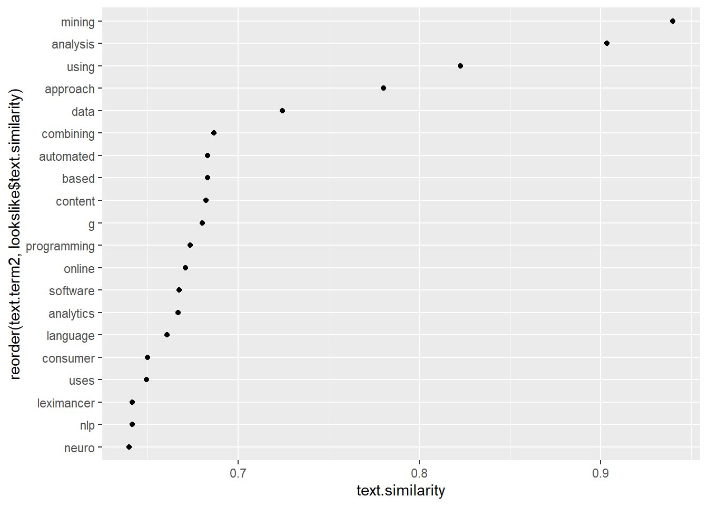
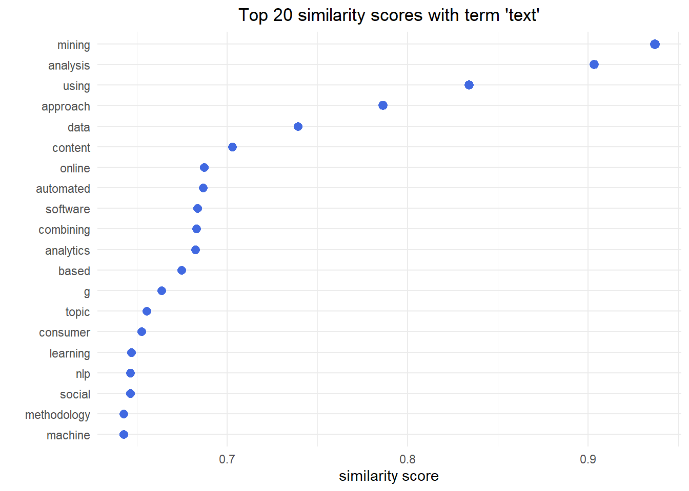

Display code
library(tidyverse)
library(word2vec)
library(quanteda)
library(text)
library(udpipe)library(tidyverse)
library(word2vec)
library(quanteda)
library(text)
library(udpipe)list_articles <- read.csv2("nlp_full_data_final_18-08-2023.csv", encoding = "UTF-8") %>%
rename("entry_number" = 1)
list_references <- read.csv2("nlp_references_final_18-08-2023.csv", encoding = "UTF-8") %>%
rename("citing_art" = 1)
colnames(list_articles) <- gsub("\\.+", "_", colnames(list_articles)) # <1>
colnames(list_articles) <- gsub("^[[:punct:]]+|[[:punct:]]+$", "", colnames(list_articles)) # <2>
colnames(list_references) <- gsub("\\.+", "_", colnames(list_references))
colnames(list_references) <- gsub("^[[:punct:]]+|[[:punct:]]+$", "", colnames(list_references))
data_embeddings <- list_articles %>%
distinct(entry_number, .keep_all = TRUE) %>%
filter(marketing == 1) %>%
mutate("combined_text" = paste0(dc_title,". ", dc_description)) %>%
mutate("year" = substr(prism_coverDate,7,10))data_embeddings %>%
head(5) %>%
select(entry_number, dc_creator, combined_text, year) entry_number dc_creator
1 1 Loupos P.
2 2 Krefeld-Schwalb A.
3 3 Kronrod A.
4 4 Chang H.H.
5 5 Dobrucalı Yelkenci B.
combined_text
1 What reviews foretell about opening weekend box office revenue: the harbinger of failure effect in the movie industry. We empirically investigate the harbinger of failure phenomenon in the motion picture industry by analyzing the pre-release reviews written on movies by film critics. We find that harbingers of failure do exist. Their positive (negative) pre-release movie reviews provide a strong predictive signal that the movie will turn out to be a flop (success). This signal persists even for the top critic category, which usually consists of professional critics, indicating that having expertise in a professional domain does not necessarily lead to correct predictions. Our findings challenge the current belief that positive reviews always help enhance box office revenue and shed new light on the influencer-predictor hypothesis. We further analyze the writing style of harbingers and provide new insights into their personality traits and cognitive biases.
2 Tighter nets for smaller fishes? Mapping the development of statistical practices in consumer research between 2008 and 2020. During the last decade, confidence in many social sciences, including consumer research, has been undermined by doubts about the replicability of empirical research findings. These doubts have led to increased calls to improve research practices and adopt new measures to increase the replicability of published work from various stakeholders such as funding agencies, journals, and scholars themselves. Despite these demands, it is unclear to which the research published in the leading consumer research journals has adhered to these calls for change. This article provides the first systematic empirical analysis of this question by surveying three crucial statistics of published consumer research over time: sample sizes, effect sizes, and the distribution of published p values. The authors compile a hand-coded sample of N = 258 articles published between 2008 and 2020 in the Journal of Consumer Psychology, the Journal of Consumer Research, and the Journal of Marketing Research. An automated text analysis across all publications in these three journals corroborates the representativeness of the hand-coded sample. Results reveal a substantial increase in sample sizes above and beyond the use of online samples along with a decrease in reported effect sizes. Effect and samples sizes are highly correlated which at least partially explains the reduction in reported effect sizes.
3 Been There, Done That: How Episodic and Semantic Memory Affects the Language of Authentic and Fictitious Reviews. This article suggests a theory-driven approach to address the managerial problem of distinguishing between real and fake reviews. Building on memory research and linguistics, we predict that when recollecting an authentic experience in a product review, people rely to a greater extent on episodic memory. By contrast, when writing a fictitious review, people do not have episodic memory available to them. Therefore, they must rely to a greater extent on semantic memory. We suggest that reliance on these different memory types is reflected in the language used in authentic and fictitious reviews. We develop predictions about five linguistic features characterizing authentic versus fictitious reviews. We test our predictions via a multi-method approach, combining computational linguistics, experimental design, and machine learning. We employ a large-scale experiment to derive a dataset of reviews, as well as two datasets containing reviews from online platforms. We also test whether an algorithm relying on our theory-driven linguistic features is context independent, relative to other benchmark algorithms, and shows better cross-domain performance when tested across datasets. By developing a theory that extends memory and psycholinguistics research to the realm of word of mouth, this work contributes to our understanding of how authentic and fictitious reviews are created.
4 More Voices Persuade: The Attentional Benefits of Voice Numerosity. The authors posit that in an initial exposure to a broadcast video, hearing different voices narrate (in succession) a persuasive message encourages consumers’ attention and processing of the message, thereby facilitating persuasion; this is referred to as the voice numerosity effect. Across four studies (plus validation and replication studies)—including two large-scale, real-world data sets (with more than 11,000 crowdfunding videos and over 3.6 million customer transactions, and more than 1,600 video ads) and two controlled experiments (with over 1,800 participants)—the results provide support for the hypothesized effect. The effect (1) has consequential, economic implications in a real-world marketplace, (2) is more pronounced when the message is easier to comprehend, (3) is more pronounced when consumers have the capacity to process the ad message, and (4) is mediated by the favorability of consumers’ cognitive responses. The authors demonstrate the use of machine learning, text mining, and natural language processing to process and analyze unstructured (multimedia) data. Theoretical and marketing implications are discussed.
5 Online complaint handling: a text analytics-based classification framework. Purpose: This study aims to both identify content-based and interaction-based online consumer complaint types and predict complaint types according to the complaint magnitude rooted in complainants' personality traits, emotion, Twitter usage activity, as well as complaint's sentiment polarity, and interaction rate. Design/methodology/approach: In total, 297,000 complaint tweets were collected from Twitter, featuring over 220,000 consumer profiles and over 24 million user tweets. The obtained data were analyzed via two-step machine learning approach. Findings: This study proposes a set of content and profile features that can be employed for determining complaint types and reveals the relationship between content features, profile features and online complaint type. Originality/value: This study proposes a novel model for identifying types of online complaints, offering a set of content and profile features that can be used for predicting complaint type, and therefore introduces a flexible approach for enhancing online complaint management.
year
1 2023
2 2023
3 2023
4 2023
5 2023set.seed(42)
model <- word2vec(x = data_embeddings$combined_text, type = "skip-gram", dim = 300, iter = 20, stopwords = "english", window = "5")
embedding <- as.matrix(model)
#embedding <- predict(model, c("NLP", "language"), type = "embedding")
#embeddinglookslike <- predict(model, c("marketing"), type = "nearest", top_n = 20) %>% as.data.frame()
lookslike marketing.term1 marketing.term2 marketing.similarity marketing.rank
1 marketing chief 0.6458059 1
2 marketing suite 0.6365959 2
3 marketing efforts 0.6306486 3
4 marketing C 0.6305789 4
5 marketing SMA 0.6186370 5
6 marketing executives 0.6104582 6
7 marketing priorities 0.6084613 7
8 marketing relations 0.5998546 8
9 marketing excellence 0.5895408 9
10 marketing commercial 0.5877668 10
11 marketing seems 0.5851116 11
12 marketing targeting 0.5832373 12
13 marketing fields 0.5810684 13
14 marketing calls 0.5802324 14
15 marketing executive 0.5797516 15
16 marketing materials 0.5782395 16
17 marketing multidisciplinary 0.5774974 17
18 marketing students 0.5708829 18
19 marketing organizational 0.5694386 19
20 marketing coverage 0.5680056 20lookslike %>%
ggplot(aes(x=marketing.similarity,y=reorder(marketing.term2,marketing.similarity)))+
geom_point()
lookslike %>%
ggplot(aes(x = marketing.similarity, y = reorder(marketing.term2, marketing.similarity))) +
geom_point(color = "royalblue", size = lookslike$marketing.similarity+2) +
theme_minimal() +
labs(x = "Similarité en marketing",
y = "Terme marketing") +
ggtitle("Relation entre Similarité en marketing et Termes marketing") +
theme(plot.title = element_text(hjust = 0.5))